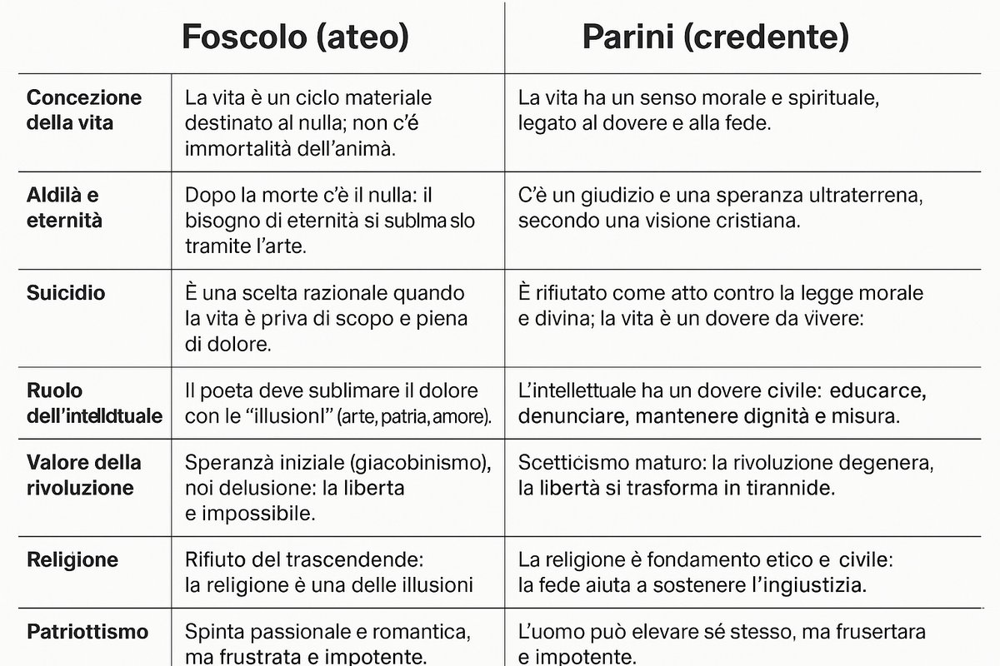

L'incontro con Parini
Dianzi io adorava le sepolture di Galileo, del Machiavelli, e di Michelangelo; e nell'appressarmivi io tremava preso da brivido. Coloro che hanno eretti que' mausolei sperano forse di scolparsi della povertà e delle carceri con le quali i loro avi punivano la grandezza di que' divini intelletti? Oh quanti perseguitati nel nostro secolo saranno venerati da' posteri! Ma e le persecuzioni a' vivi, e gli onori a' morti sono documenti della maligna ambizione che rode l'umano gregge.
Presso a que' marmi mi parea di rivivere in quegli anni miei fervidi, quand'io vegliando su gli scritti de' grandi mortali mi gittava con la immaginazione fra i plausi delle generazioni future. Ma ora troppo alte cose per me! - e pazze forse. La mia mente è cieca, le membra vacillanti, e il cuore guasto qui - nel profondo.
Ritienti le commendatizie di cui mi scrivi: quelle che mi mandasti io le ho bruciate. Non voglio più oltraggi, né favori da veruno degli uomini potenti. L'unico mortale ch'io desiderava conoscere era Vittorio Alfieri; ma odo dire ch'ei non accoglie persone nuove: né io presumo di fargli rompere questo suo proponimento che deriva forse da' tempi, da' suoi studj, e più ancora dalle sue passioni e dall'esperienza del momdo. E fosse anche una debolezza, le debolezze di sì fatti mortali vanno rispettate; e chi n'è senza, scagli la prima pietra.
Jer sera dunque io passeggiava con quel vecchio venerando nel sobborgo orientale della città sotto un boschetto di tigli. Egli si sosteneva da una parte sul mio braccio, dall'altra sul suo bastone: e talora guardava gli storpj suoi piedi, e poi senza dire parola volgevasi a me, quasi si dolesse di quella sua infermità, e mi ringraziasse della pazienza con la quale io lo accompagnava. S'assise sopra uno di que' sedili ed io con lui: il suo servo ci stava poco discosto. Il Parini è il personaggio più dignitoso e più eloquente ch'io m'abbia mai conosciuto; e d'altronde un profondo, generoso, meditato dolore a chi non dà somma eloquenza? Mi parlò a lungo della sua patria, e fremeva e per le antiche tirannidi e per la nuova licenza. Le lettere prostituite; tutte le passioni languenti e degenerate in una indolente vilissima corruzione: non più la sacra ospitalità, non la benevolenza, non più l'amore figliale - e poi mi tesseva gli annali recenti, e i delitti di tanti uomiciattoli ch'io degnerei di nominare, se le loro scelleraggini mostrassero il vigore d'animo, non dirò di Silla e di Catilina, ma di quegli animosi masnadieri che affrontano il misfatto quantunque e' si vedano presso il patibolo - ma ladroncelli, tremanti, saccenti - più onesto insomma è tacerne. - A quelle parole io m'infiammava di un sovrumano furore, e sorgeva gridando: Ché non si tenta? morremo? ma frutterà dal nostro sangue il vendicatore. - Egli mi guardò attonito: gli occhi miei in quel dubbio chiarore scintillavano spaventosi, e il mio dimesso e pallido aspetto si rialzò con aria minaccevole - io taceva, ma si sentiva ancora un fremito rumoreggiare cupamente dentro il mio petto. E ripresi: Non avremo salute mai? ah se gli uomini si conducessero sempre al fianco la morte, non servirebbero sì vilmente. - Il Parini non apria bocca; ma stringendomi il braccio, mi guardava ogni ora più fisso. Poi mi trasse, come accennandomi perch'io tornassi a sedermi: E pensi, tu, proruppe, che s'io discernessi un barlume di libertà, mi perderei ad onta della mia inferma vecchiaja in questi vani lamenti? o giovine degno di patria più grata! se non puoi spegnere quel tuo ardore fatale, ché non lo volgi ad altre passioni?
Allora io guardai nel passato - allora io mi voltava avidamente al futuro, ma io errava sempre nel vano e le mie braccia tornavano deluse senza pur mai stringere nulla; e conobbi tutta tutta la disperazione del mio stato. Narrai a quel generoso Italiano la storia delle mie passioni, e gli dipinsi Teresa come uno di que' genj celesti i quali par che discendano a illuminare la stanza tenebrosa di questa vita. E alle mie parole e al mio pianto, il vecchio pietoso più volte sospirò dal cuore profondo. - No, io gli dissi, non veggo più che il sepolcro: sono figlio di madre affettuosa e benefica; spesse volte mi sembrò di vederla calcare tremando le mie pedate e seguirmi fino a sommo il monte, donde io stava per diruparmi, e mentre era quasi con tutto il corpo abbandonato nell'aria - essa afferravami per la falda delle vesti, e mi ritraeva, ed io volgendomi non udiva più che il suo pianto. Pure s'ella - spiasse tutti gli occulti miei guai, implorerebbe ella stessa dal Cielo il termine degli ansiosi miei giorni. Ma l'unica fiamma vitale che anima ancora questo travagliato mio corpo, è la speranza di tentare la libertà della patria. - Egli sorrise mestamente; e poiché s'accorse che la mia voce infiochiva, e i miei sguardi si abbassavano immoti sul suolo, ricominciò: - Forse questo tuo furore di gloria potrebbe trarti a difficili imprese; ma - credimi; la fama degli eroi spetta un quarto alla loro audacia; due quarti alla sorte; e l'altro quarto a' loro delitti. Pur se ti reputi bastevolmente fortunato e crudele per aspirare a questa gloria, pensi tu che i tempi te ne porgano i mezzi? I gemiti di tutte le età, e questo giogo della nostra patria non ti hanno per anco insegnato che non si dee aspettare libertà dallo straniero? Chiunque s'intrica nelle faccende di un paese conquistato non ritrae che il pubblico danno, e la propria infamia. Quando e doveri e diritti stanno su la punta della spada, il forte scrive le leggi col sangue e pretende il sacrificio della virtù. E allora? avrai tu la fama e il valore di Annibale che profugo cercava per l'universo un nemico al popolo Romano? - Né ti sarà dato di essere giusto impunemente. Un giovine dritto e bollente di cuore, ma povero di ricchezze, ed incauto d'ingegno quale sei tu, sarà sempre o l'ordigno del fazioso, o la vittima del potente. E dove tu nelle pubbliche cose possa preservarti incontaminato dalla comune bruttura, oh! tu sarai altamente laudato; ma spento poscia dal pugnale notturno della calunnia; la tua prigione sarà abbandonata da' tuoi amici, e il tuo sepolcro degnato appena di un secreto sospiro. - Ma poniamo che tu superando e la prepotenza degli stranieri e la malignità de' tuoi concittadini e la corruzione de' tempi, potessi aspirare al tuo intento; di'? spargerai tutto il sangue col quale conviene nutrire una nascente repubblica? arderai le tue case con le faci della guerra civile? unirai col terrore i partiti? spegnerai con la morte le opinioni? adeguerai con le stragi le fortune? ma se tu cadi tra via, vediti esecrato dagli uni come demagogo, dagli altri come tiranno.
Gli amori della moltitudine sono brevi ed infausti; giudica, più che dall'intento, dalla fortuna; chiama virtù il delitto utile, e scelleraggine l'onestà che le pare dannosa; e per avere i suoi plausi, conviene o atterrirla, o ingrassarla, e ingannarla sempre. E ciò sia.
Potrai tu allora inorgoglito dalla sterminata fortuna reprimere in te la libidine del supremo potere che ti sarà fomentata e dal sentimento della tua superiorità, e della conoscenza del comune avvilimento? I mortali sono naturalmente schiavi, naturalmente tiranni, naturalmente ciechi.
Intento tu allora a puntellare il tuo trono, di filosofo saresti fatto tiranno; e per pochi anni di possanza e di tremore, avresti perduta la tua pace, e confuso il tuo nome fra la immensa turba dei despoti. - Ti avanza ancora un seggio fra' capitani; il quale si afferra per mezzo di un ardire feroce, di una avidità che rapisce per profondere, e spesso di una viltà per cui si lambe la mano che t'aita a salire. Ma - o figliuolo! l'umanità geme al nascere di un conquistatore; e non ha per conforto se non la speranza di sorridere su la sua bara. - Tacque - ed io dopo lunghissimo silenzio esclamai: O Cocceo Nerva! tu almeno sapevi morire incontaminato 17. - Il vecchio mi guardò - Se tu né speri, né temi fuori di questo mondo - e mi stringeva la mano - ma io! - Alzò gli occhi al Cielo, e quella severa sua fisionomia si raddolciva di soave conforto, come s'ei lassù contemplasse tutte le tue speranze. - Intesi un calpestio che s'avanzava verso di noi; e poi travidi gente fra' tiglj; ci rizzammo; e l'accompagnai sino alle sue stanze.
Riassunto del brano: L'incontro tra Jacopo e Parini
Jacopo Ortis, durante un soggiorno a Milano, ha l'occasione di passeggiare una sera con il vecchio Parini sotto un boschetto di tigli nel sobborgo orientale della città. Parini, ormai anziano e malato, si appoggia al braccio di Jacopo e al suo bastone, in un gesto che rivela la sua fragilità ma anche la sua dignità.
Parini si dimostra figura austera e profonda: il suo discorso si concentra sulla decadenza morale e politica della patria. Condanna sia le tirannie del passato sia la licenza del presente, lamentando la corruzione dei costumi, la decadenza delle lettere e la perdita dei valori come l'ospitalità e l'amore filiale. Denuncia la mediocrità morale e il degrado della società, in cui gli uomini non hanno più il vigore dei tempi antichi ma sono "ladroncelli tremanti".
L'eloquenza indignata del vecchio infiamma Jacopo, che reagisce con un moto appassionato, invocando la possibilità di sacrificarsi per un futuro riscatto nazionale. Parini, però, lo ammonisce con lucidità: non esistono vie semplici per la libertà. La rivoluzione può degenerare in violenza e tirannide, e il potere corrompe anche le anime più nobili. I grandi ideali rischiano di trasformare i filosofi in despoti.
Jacopo si sfoga raccontando la sua disperazione personale, l'amore per Teresa e la sofferenza che lo tormenta. Confessa di essere stato tentato dal suicidio, ma di esserne stato trattenuto dall'amore della madre e dalla speranza di servire la patria. Parini, toccato dalla sincerità del giovane, lo ascolta in silenzio e lo stringe con affetto. Quando infine si salutano, Parini gli dice parole profetiche: Jacopo porterà ovunque le sue passioni, ma non potrà mai soddisfarle e sarà sempre infelice.
1. L'analisi critica del brano Foscolo decide di far incontrare Jacopo Ortis con Giuseppe Parini e non con Vittorio Alfieri, come era inizialmente previsto nel progetto narrativo, per creare un confronto autentico e drammatico tra due concezioni opposte della libertà e della vita. Entrambi i personaggi sono animati da un profondo amore per l'ideale di libertà, ma divergono radicalmente nella visione del mondo: Ortis, come lo stesso Foscolo, è ateo, disilluso e portato all'azione tragica; Parini, invece, è un credente razionale, un uomo che fonda il suo impegno civile sulla misura, sull'etica e sulla fiducia in una provvidenza morale. Questo contrasto permette a Foscolo di costruire una dialettica viva, fatta di tensione e di ascolto reciproco, che sarebbe mancata in un dialogo con Alfieri, il quale condivide già gran parte della visione foscoliana.
Ortis, infatti, rappresenta una forma evoluta e tragica del pensiero alfieriano, soprattutto di quello contenuto nell'opera "Della tirannide"; un confronto tra simili non avrebbe generato il medesimo spessore drammatico e filosofico.
Parini rappresenta un ideale etico, razionale, illuminista ma spiritualmente solido. La sua figura incarna la dignità del saggio che, pur nella vecchiaia e nella malattia, conserva lucidità e integrità morale. Ortis, invece, è lacerato tra aspirazioni eroiche e disperazione esistenziale. L'incontro tra i due produce un confronto alto, carico di pathos e profondità filosofica. Parini invita alla misura, alla responsabilità morale, mentre Ortis è tutto fuoco e slancio.
L'assoluta originalità del brano sta proprio nella capacità di Foscolo di rappresentare un dialogo tra due visioni del mondo inconciliabili, ma entrambe autentiche. La parola di Parini non cancella Ortis, ma lo obbliga a riflettere, lo espone al dubbio. In questo senso, Parini è anche una figura maieutica, che stimola la coscienza del giovane senza imporgli una verità.
Il brano acquista così una struttura profondamente socratica, ma anche tragica: non c'è conciliazione, solo consapevolezza più acuta. Foscolo raggiunge in queste pagine uno dei vertici della prosa italiana moderna, unendo stile, pensiero e tensione drammatica in modo esemplare.
Tema Foscolo (ateo) Parini (credente)
----------------------- ----------------------- -----------------------
Concezione della La vita è un ciclo La vita ha un senso vita materiale destinato al morale e spirituale, nulla; non c'è legato al dovere e alla immortalità dell'anima. fede.
Aldilà e eternità Dopo la morte c'è il C'è un giudizio e una nulla: il bisogno di speranza ultraterrena, eternità si sublima secondo una visione solo tramite l'arte. cristiana.
Suicidio È una scelta razionale È rifiutato come atto quando la vita è priva contro la legge morale di scopo e piena di e divina; la vita è un dolore. dovere da vivere.
Ruolo Il poeta deve sublimare L'intellettuale ha un dell'intellettuale il dolore con le dovere civile: educare, "illusioni" (arte, denunciare, mantenere patria, amore). dignità e misura.
Valore della Speranza iniziale Scetticismo maturo: la rivoluzione (giacobinismo), poi rivoluzione degenera, delusione: la libertà è la libertà si trasforma impossibile. in tirannide.
Religione Rifiuto del La religione è trascendente: la fondamento etico e religione è una delle civile: la fede aiuta a illusioni utili ma sostenere fittizie. l'ingiustizia.
Patriottismo Spinta passionale e Lucida amarezza: romantica, ma frustrata l'Italia è corrotta, ma e impotente. va servita con dignità silenziosa.
Visione dell'uomo L'uomo è lacerato, L'uomo può elevare sé vittima di passioni e stesso attraverso il destino. pensiero e la giustizia.

L'incontro tra Jacopo Ortis e Parini